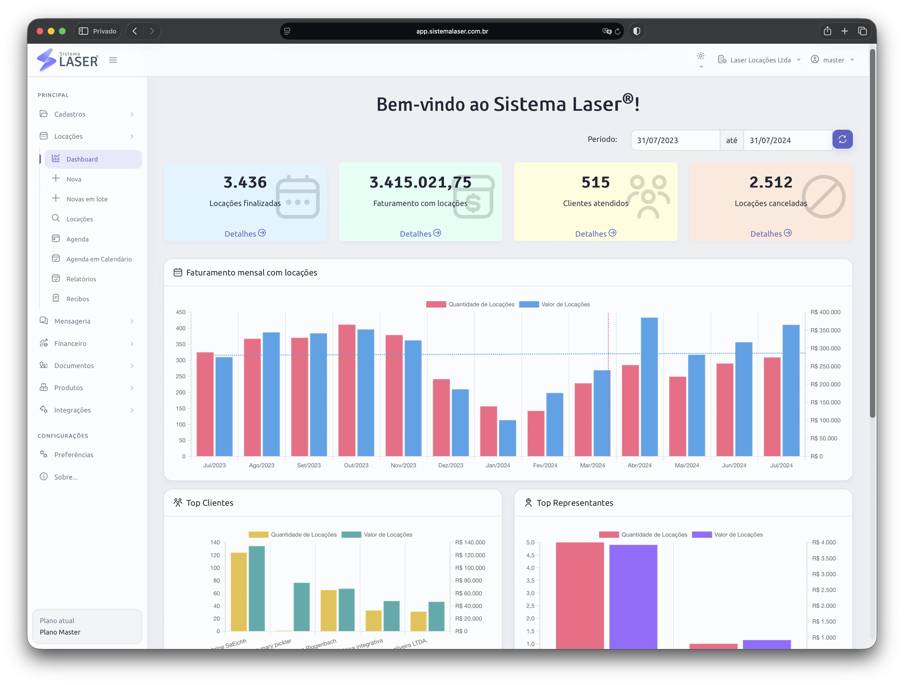

Equipamentos de alto valor
Controle locação de lasers, ponteiras, disparos, protocolos e manutenção.
O Sistema Laser foi criado para qualquer empresa de locação de equipamentos — de itens médicos e estéticos a máquinas de café expresso, máquinas de grande porte e pequenos equipamentos — que precisa saber o que está disponível, o que está alugado, quanto foi cobrado, quais documentos foram emitidos e quais equipamentos exigem atenção.
Uma locação começa na consulta de disponibilidade, passa por proposta, contrato, entrega, uso, cobrança e devolução. Quando cada etapa fica em um lugar diferente, a equipe perde contexto e a empresa perde previsibilidade.
Com o Sistema Laser, agenda, equipamentos, clientes, recibos, documentos, fotos, financeiro, estoque, parceiros e relatórios trabalham juntos. Isso reduz retrabalho e facilita a consulta rápida antes de confirmar uma nova reserva.

Locadoras diferentes usam nomes diferentes para o mesmo desafio: controlar ativos alugados com segurança.
Controle locação de lasers, ponteiras, disparos, protocolos e manutenção.
Organize disponibilidade, documentos e rastreabilidade de uso.
Acompanhe ativos, contratos, cobranças e devoluções.
Use a mesma base para máquinas de café expresso, máquinas de grande porte, pequenos equipamentos e qualquer outro item alugável.
Estas respostas ajudam a comparar sistemas para aluguel de equipamentos com foco em controle real da operação.
Compare recursos por segmento, entenda os planos ou converse com a equipe para receber uma demonstração orientada.